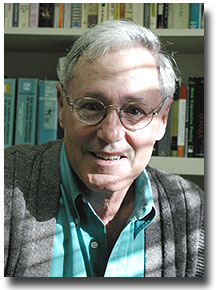
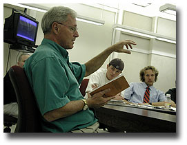

| Search Davidson |
Abbott's New Poems Recall A Long, Lyrical Quest For Wonder
|
|  |
November 21, 2000
Contact: Bill Giduz 704/894-2244 or bigiduz@davidson.edu
Throughout 37 years of teaching English and creative writing at Davidson, Tony Abbott has maintained a reputation for eternal youth. His slightly spacey demeanor, enthusiasm, and quick, elfin smile have attracted overflow enrollment in his courses. In addition, his skill in writing and reading poetry has built a legion of admirers in the broader literary community.
The recent publication of his third book of poetry, The Search for Wonder In the Cradle of the World, by St. Andrews Press, gives them all a reason for celebrating his passion for the perfect word. The title refers to his soul-searching during a 1993 sabbatical journey through the Middle East. "This is the region where our whole civilization began, and these places still have capacity to evoke a sense of wonder and awe," he explained.
The current book is his third volume of poetry. His 1989 book, The Girl In the Yellow Raincoat, was nominated for a Pulitzer Prize. He published A Small Thing Like A Breath in 1993.
His latest book was written between 1993 and 1999. It is divided into four sections that reflect changing attitudes about wonder throughout a lifetime. The first poem in the first section is "Genesis," a marriage poem that depicts his son, Steven, and his new bride as a modern Adam and Eve. The final poem of the book is entitled "Come Lord Jesus." It concerns the ecstacy of St. Theresa, and concludes with one of the final phrases in the book of Revelation.
"The book begins with first chapter of Bible and ends with the last. That must have some significance!" Abbott quipped.
He continued, "I think the book acknowledges that our search for wonder in the world is in essence a religious search. We all seek something transcendent that creates a sense of wonder and awe, and reminds us we are not just physical beings."
The first section reflects a child's unquestioning sense of wonder about the world. The second part, "What We Have," deals with everyday life in the world and the cynicism and loss of wonder felt by young adults. The third part, "Alphabet Soup," is about old age with its sense of loss and quest to recover a sense of wonder and meaning in life.
Then final section grew directly from Abbott's 1993 trip with his spouse, Susan, to the "Cradle of the World," to try to regain his personal sense of wonder. He explained, "The book is full of poems that wrestle with religious questions. I write about the doubt that creates a loss of wonder, and separation from God that we struggle to overcome. The poems are responses to the things in the world that tend to shake our sense of faith."
For example, a poem entitled "The Slow Beginning of Our Lives" was written when Abbott attended a class reunion in 1995 at age 60. He recalls that "the world was falling apart with the Oklahoma bombing , Bosnia, and the Simpson trial. At the same time I was turning 60, and there was nothing I could do about any of it. The poem is about having the 'gettin'-old' blues at age 60."
Another poem, entitled "Treasure Hunt," grew from Abbott's auditing a Davidson religion course about "Parables." "I wrote it for the professor, Karl Plank, about the search for God set in modern Davidson instead of Palestine," Abbott said.
"Point of Light," was written for friends with a son who has battled cancer throughout his young life. "It asks where God is in that struggle," Abbott said. "That's a tough question to answer."
"Father William" was inspired when he and students viewed the AIDS Memorial Quilt on display on campus. "The White Dogs" was written for the late Bob Stone, another cancer victim.
|  |
Abbott, a Princeton undergraduate and Harvard Ph.D., began teaching American literature and drama at Davidson in 1964. His spiritual quest through poetry only began in the early 1970s, initiated as a means of coming to grips with feelings of grief and loss. "It gives you a way not only of feeling things, but of helping you understand what you feel," he said. "Sometimes you don't know what you feel until you write it."
In the past 30 years he has become prolific and celebrated, successful because he is able to help people understand feelings they have been unable to articulate on their own.
Abbott describes his poetic style as "elegiac." His poem "Remembrance" in A Small Thing Like A Breath tells of his painful but cathartic visit to the grave of his daughter, Lyn, who died suddenly in 1967 at age four. The book is dedicated to her memory. "Part of the process of living is learning to accept death as that which comes, and working to memorialize and celebrate the lives of people who die," he said. "The fact that I'm still writing about things that happened more than twenty-five years ago is not a way of dwelling on the sadness, but instead of keeping those people alive."
He feels called to write about people and occasions as a means of giving them life beyond death. "I think it's my response to the aging process, where you have a constant sense that things are slipping away from you. You write a poem to keep a precious moment alive, because when people read the poem it lives again. The most important thing is to give something life, because by giving it life you're honoring it."
Abbott has gained renown not only as a writer of verse, but for his personal presentation of it. Professor Randy Nelson, current department chair, said, "Tony is one of the few poets who can read his own work well. Most college professors are terrible readers of their own stuff, but he knows how to make a poem an experience for a larger group of people."
Abbott revels in readings, and is invited to give dozens each year to book clubs, church groups, academic audiences, and professional gatherings. One thing that appeals to audiences is his lyric narrative style of writing. "I think people like hearing me read them because my poems often have a plot and move toward some sort of narrative climax. It's a form that's familiar, and therefore engaging," he concluded.
Involvement with professional organizations has been integral to his development as a writer, He has sought out communities of people with whom he could share concerns, ideas, and feelings that non-writers find difficult to understand. He also eagerly accepted leadership in the field, and has served as president of the N.C. Writers Network and the Charlotte Writers Club, as well as judge and speaker for the O. Henry Literary Festival. He commented, "Writers groups make you realize that you aren't crazy after all, that there is someone out there who understands what you're doing."
He has received numerous awards for poems published in literary magazines through the years, including winning the N.C. Poetry Society's Thomas H. McDill competition three times. His reputation was confirmed in 1996 when he won the state's Sam Ragan Fine Arts Award, which recognizes artistic excellence and a dedication to furthering the arts in North Carolina.
Abbott will retire from the Davidson faculty in December, though he might continue to teach occasional courses. He plans to continue writing and reading poetry, and may teach in forums such as Elderhostel. He's aware of retirement as a major transition in life, and intends to go about it deliberately and well. "You can't live in the past," he said, "but you can bring the past into the present and do something with it. Robert Frost used the image of a rock that you toss down the road ahead of you. Later you come up to it and can say, 'That's what it was all about!' 'That's what it meant.' Writers reinterpret experience, and use their imagination to reshape it and give it meaning."
Davidson is a highly selective independent liberal arts college for 1,600 students. Since its establishment in 1837, the college has graduated 23 Rhodes Scholars and is consistently ranked among the top liberal arts colleges in the country by "U.S. News and World Report" magazine.